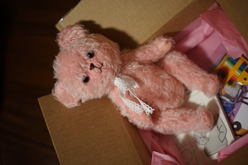
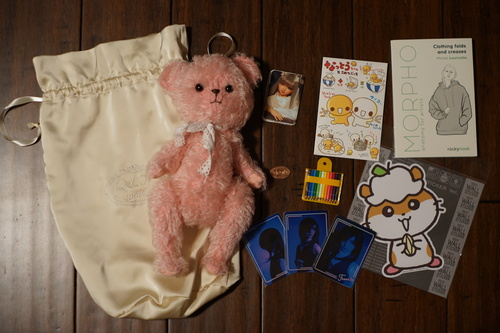
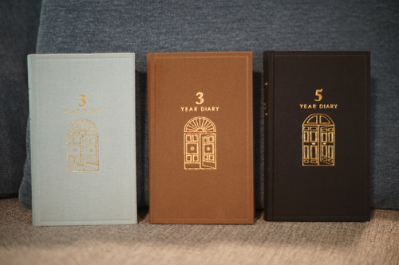
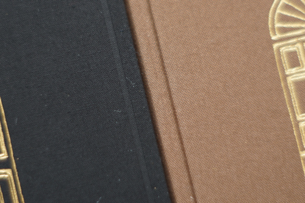
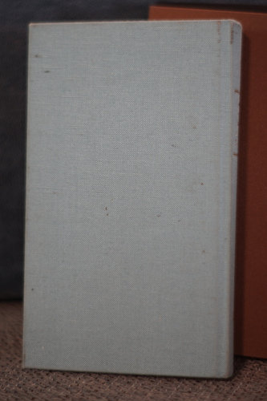
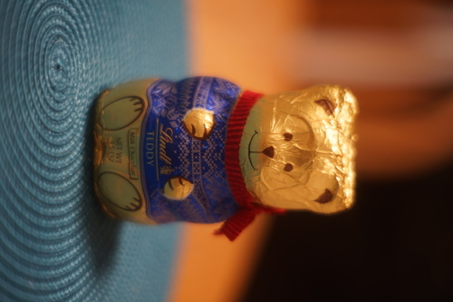
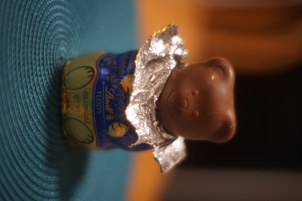
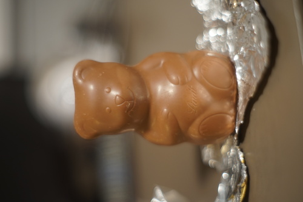
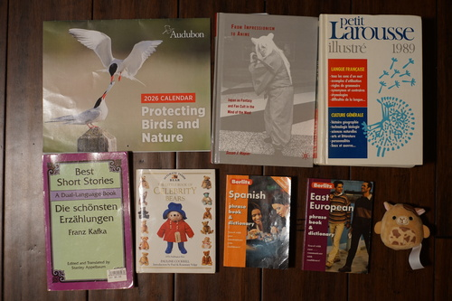
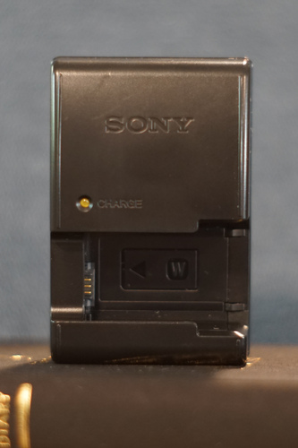

I got a most wonderful gift in the mail this year!! Please look!!
Hors sent me the most wonderful gift! Just look at my new bear!! I put her next to my bed so she can give me strength with her sweet smile every morning. She doesn't have a name yet. It's in progress.

Diary plans changed and I ended up being handed a surprise late Christmas present on New Year's eve. It was the Midori 3 Year I asked for. Just in time!
I was really upset that the Midori 5 Year I ordered wasn't going to arrive for a few weeks into January. It finally arrived on the 19th. I was so upset about missing most of the month that I decided I was not going to cancel the order, even after being handed the 3 Year. I'm going to prepared for 2029 and will also never ask for a diary for Christmas again. Don't leave this in the hands of others!!
So now that I have 3 of these bad boys...
The 5 year is the same size as the 3 year. Swapping between covers will be very easy during a 3 to 5 year switch!
The bookmark ribbons in these (and Midori MD notebooks) are not polyester and do not melt. They burst into flame and smell like burnt marshmallows. Use fray check instead! My 3 Year didn't unravel too much during the 3 years of use, but I sealed them all just in case.
The fabric has changed. The blue one I got 3 years ago is a more textured weave. The new two are finely woven. They look shinier like polyester, but I didn't do a burn test to find out.
Here's the beating mine took over the 3 years we spent together. Mostly just dirt and absorbed eraser shavings. I think the 5 year should hold up just fine during that time period.
I really highly recommend these though! They're on the small size so they're not a pain to travel with and it's very fun to look back at what you were doing at this time last year. Maybe I'll try a 10 year someday and let you know if it holds up. I'll get back to you on that in... 2044? On second thought, someone else better do it first! That one IS twice as thick though!
Instead of making covers for these, I got distracted and started making shrinky dink charms. I'll get to the covers eventually...
I started searching online for recommendations of sealing methods of shrinky dinks and I found a page with some interesting text.
If you have a dish rack that is not holding up to the test of time, it may be due to shrinkage. To prevent your dishes from shrinking and falling off the dish rack, seal them with a Shrinky Dink.
Somehow, my favorite site to cr*p talk, Reddit, has become the best source of information in 2026. We now live in bizarro world.




I can say I have made better choices in life that didn't involve buying this book.
There's no way I can read this. My German is terrible! Wait.... I know English!!!
Happy birthday, Hina :3 It took me more than a few google searches to figure out that this is a seacow.
Not even my hate for Love Live could stop me for buying this clearfile~
And the best find in a while for last!!
I was talking with my friend at Goodwill explaining to her the insanely interesting and life changing world of camera battery charger saying that I finally caved and bought a 3rd party one after never finding the Sony one for mine, and it was an amazing purchase I should have made sooner. "I've been looking for a Sony W-series charger for years and it's just never-" AND I PICKED ONE UP THAT VERY MOMENT!! I couldn't believe it!! I'm so happy~